The following objects are masked from 'package:stats':
filter, lag
The following objects are masked from 'package:base':
intersect, setdiff, setequal, union
library(ggplot2)library(patchwork)
PREGUNTA 1
Considere X1, X2, . . . , Xn variables aleatorias independientes e idénticamente distribuidas todas con distribució́n exponencial con media 5. Tambi ́en considere Y1, Y2, . . . , Ym variables aleatorias independientes e idénticamente distribuidas todas con distribució́n exponencial con media 15 e independientes de los Xis. Defina la cantidad
Tome m = 20. Simule n = 10 y grafica la función de densidad
(a) Tome m = 20. Simule n = 10,100,1000,1000 Xis y Yjs y sugiera una posible distribució́n.
(b) Tome n = 20. Simule m = 10,100,1000,1000 Xis y Yjs y sugiera una posible distribució́n.
(c) Encuentre la distribució́n de T
Definimos el número de observaciones para cada variable aleatoria
m <-20
Simulamos varios valores de T y los almacenamos en un vector
# Definimos el número de observaciones para cada variable aleatoriam <-20# Simulamos varios valores de T y los almacenamos en un vectorset.seed(123)n_sim <-1000T_sim <-c()graph_list <-list()n_values <-c(10, 100, 1000, 10000)for (j inseq_along(n_values)) { n <- n_values[j]for (i in1:n_sim) { X <-rexp(n, rate =1/5) Y <-rexp(m, rate =1/15) mu_X <-mean(X) mu_Y <-mean(Y) T <- mu_X / mu_Y T_sim <-c(T_sim, T) }# Gráfica de la distribución de T df1 <-data.frame(T_sim) grafica1 <-ggplot(df1, aes(x = T_sim)) +geom_histogram(aes(y =after_stat(count)/sum(after_stat(count))),bins =50, linewidth =1, fill ="blue") +ggtitle(paste("Densidad de T, con n =", n, "y m =", m)) +ylab("f(t)") +xlab("T") +theme_light() graph_list[[j]] <- grafica1}(graph_list[[1]] | graph_list[[2]]) / (graph_list[[3]] | graph_list[[4]])
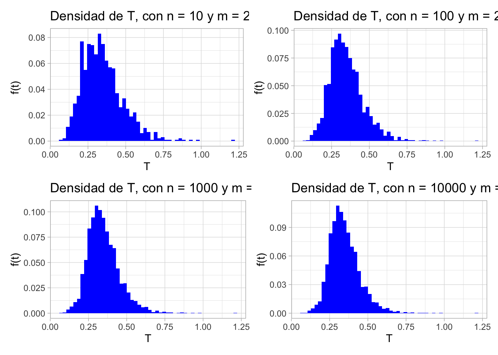
# Definimos el número de observaciones para cada variable aleatorian <-20# Simulamos varios valores de T y los almacenamos en un vectorset.seed(123)n_sim <-1000T_sim <-c()graph_list1 <-list()m_values <-c(10, 100, 1000, 10000)for (j inseq_along(m_values)) { m <- m_values[j]for (i in1:n_sim) { X <-rexp(n, rate =1/5) Y <-rexp(m, rate =1/15) mu_X <-mean(X) mu_Y <-mean(Y) T <- mu_X / mu_Y T_sim <-c(T_sim, T) }# Gráfica de la distribución de T df1 <-data.frame(T_sim) grafica1 <-ggplot(df1, aes(x = T_sim)) +geom_histogram(aes(y =after_stat(count)/sum(after_stat(count))),bins =30, linewidth =1, fill ="blue") +ggtitle(paste("Densidad de T, con n =", n, "y m =", m)) +ylab("f(t)") +xlab("T") +theme_light() graph_list1[[j]] <- grafica1}(graph_list1[[1]] | graph_list1[[2]]) / (graph_list1[[3]] | graph_list1[[4]])
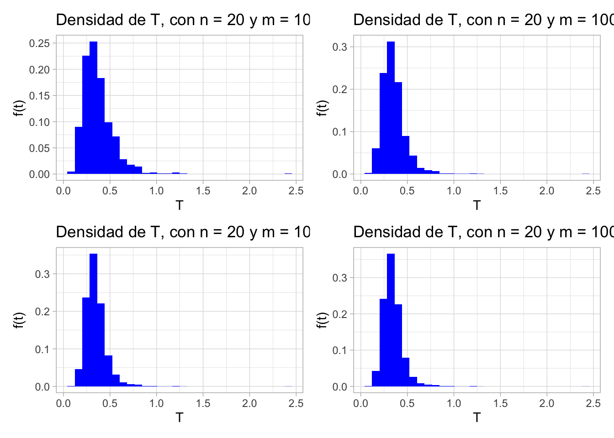
PREGUNTA 2
Considere X1, X2, X3, …, Xn variables aleatorias independientes e idénticamente distribuídas todas con distribución normal estándar.
Haga n= 10, 100, 1000, 10000 simulaciones de U y sugiera una posible distribución para U
set.seed(123)n<-10#Tomo las muestras aleatorias para XX<-rnorm(n, 0, 1)#Calculo las sumas de la Xsuma_x<-sum(X) #El cuadrado de una normal estándar es ji cuadrada defino X^2 como YY<-rchisq(n, 1)#no creo que tomar estas muestras sirva por que no son los mismos valores de Xi y por eso no los voy a tomar #Encuentro el vector con los cuadrados de cada valorcuadrados<- X^2suma2_x <-sum(cuadrados)#calculo el valor de UU= (sqrt(n)*suma_x)/suma2_x#Hago las simulaciones con n=10set.seed(123)n<-10U_sim <-numeric(n)for(i in1:n){ X<-rnorm(n,0,1) suma_x<-sum(X) cuadrados<- X^2 suma2_x <-sum(cuadrados) U_sim[i]<-(sqrt(n)*suma_x)/suma2_x}#graficodf_simuls10 <-data.frame(simulaciones= U_sim)densidad10<-df_simuls10 %>%ggplot()+geom_density(aes(x = simulaciones), color="red")+theme_minimal()grafica10<-df_simuls10 %>%ggplot()+geom_histogram(aes(x=simulaciones, y=..density..), fill="pink", alpha=0.5)+theme_minimal()graficas<-densidad10| grafica10 graficas+plot_annotation("Para n=10")
`stat_bin()` using `bins = 30`. Pick better value with `binwidth`.
La distribución que sugerimos para U es la normal estandar, para demostrar esto la pondremos en la misma gráfica que las 10000 simulaciones y compararemos
`stat_bin()` using `bins = 30`. Pick better value with `binwidth`.
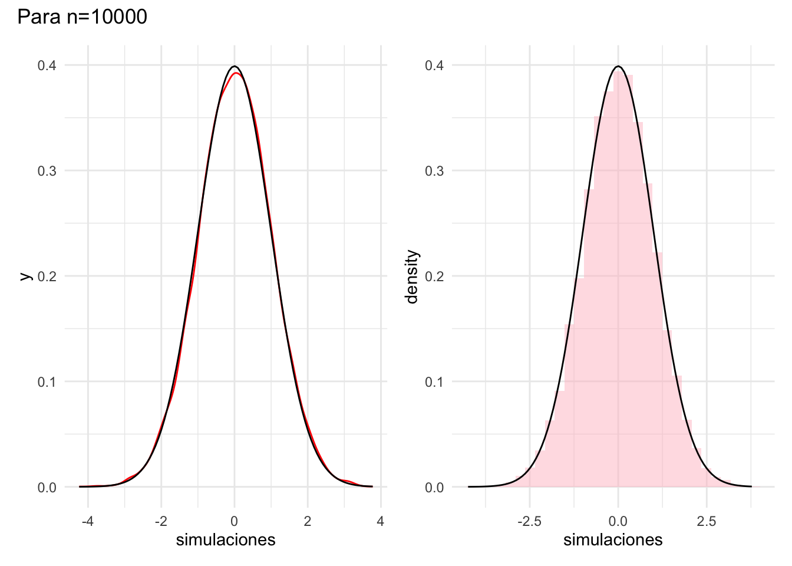
##PREGUNTA 3
Considere \(X_1,X_2,...,X_n\) variables aleatorias independientes e idénticamente distribuidas todas con distribución Unif(0,5). Defina
\(U=máx\{X_1,X_2,...,X_n\}-5\).
Haga n = 10, 100, 1000, 10000 simulaciones de U y sugiera una posible distribuci ́on para U
Simulamos varios valores de T y los almacenamos en un vector
# Simulamos varios valores de T y los almacenamos en un vector#| warning: falseset.seed(123)n_sim <-1000U_sim <-numeric(n_sim)n_values <-c(10, 100, 1000, 10000)for (j inseq_along(n_values)) { n <- n_values[j]for (i in1:n_sim) { X <-runif(n) M <-max(X) U_sim[i] <- M -5 }# Gráfica de la distribución de u df1 <-data.frame(U_sim) grafica1 <-ggplot(df1, aes(x = U_sim)) +geom_histogram(aes(y =after_stat(count)/sum(after_stat(count))),bins =50, linewidth =1, fill ="blue") +ggtitle(paste("Densidad de U, con n =", n)) +ylab("f(t)") +xlab("T") +theme_light() graph_list[[j]] <- grafica1}(graph_list[[1]] | graph_list[[2]]) / (graph_list[[3]] | graph_list[[4]])
El resultado teórico visto en clase es que el estadístico de orden para el máximo de una muestra de uniformes (0,1) se distribuye \(Beta(n, 1)\).
Lo que tenemos aquí es un despalazamiento. Sigue siendo una distribución Beta, pero con un parámetro de localización diferente. En concreto, la media de Y es ahora (n-1)/(n+1) - 5, que está desplazada hacia la izquierda 5 unidades en comparación con la media de X.
PREGUNTA 4
Se lanzan 3 dados balanceados. Sea X la suma de las caras.
(a) Para n = 100, 1000, 10000, 100000 haga n simulaciones para obtener la función de masa de probabilidad aproximada de X.
(b) Usando las funciones de las librería ‘patchwork’ y ‘ggplot2’ ponga en un mismo gráafico las cuatro gráficas de las funciones de masa del inicio anterior (c) Para n = 10, . . . , 100000 haga n simulaciones para obtener un estimado de la probabilidad P(X ≤ 3). Ponga en un gráfico n en el eje horizontal y la probabilidad en el eje vertical.
# Define the values of n to usen_values <-c(100, 1000, 10000, 100000)# Create an empty list to store the graphsgraph_list <-list()# Use a for loop to create the graphs and store them in the listfor (i in1:length(n_values)) { n <- n_values[i] df <-data.frame(suma = vector_simuls[1:n]) graph <- df %>%ggplot() +geom_histogram(aes(x = suma,y=..count../sum(after_stat(count))),linewidth=1, fill ="blue") +ggtitle(paste("Densidad de la suma n=", n)) +ylab("f") +xlab("suma") +theme_light() graph_list[[i]] <- graph}(graph_list[[1]] | graph_list[[2]]) / (graph_list[[3]] | graph_list[[4]])
probabilidades_estimadas <-c()for(i in1:length(simuls_satisfacen)){ satisfacen <- simuls_satisfacen[1:i] proba_estimada <-sum(satisfacen)/length(satisfacen) probabilidades_estimadas <-c(probabilidades_estimadas, proba_estimada)}print(paste("la proba estimada para 100 simulaciones es", probabilidades_estimadas[[100]]))
[1] "la proba estimada para 100 simulaciones es 0"
print(paste("la proba estimada para 1000 simulaciones es", probabilidades_estimadas[[1000]]))
[1] "la proba estimada para 1000 simulaciones es 0.005"
print(paste("la proba estimada para 10000 simulaciones es", probabilidades_estimadas[[10000]]))
[1] "la proba estimada para 10000 simulaciones es 0.0044"
print(paste("la proba estimada para 100000 simulaciones es", probabilidades_estimadas[[100000]]))
[1] "la proba estimada para 100000 simulaciones es 0.00434"
df_probas <-data.frame(n =1:length(simuls_satisfacen),probabilidades = probabilidades_estimadas)df_probas %>%ggplot() +geom_line(aes(x = n, y = probabilidades)) +ylab("probabilidades") +xlab("n") +theme_light()
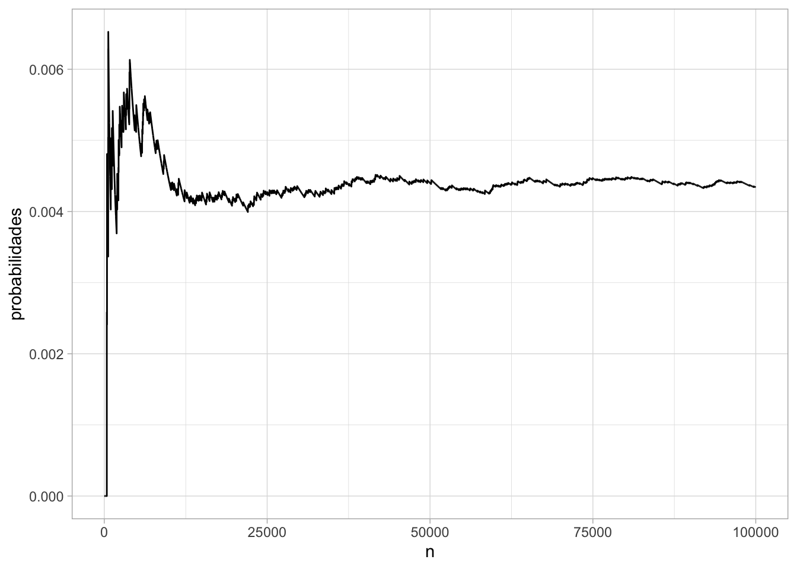
PREGUNTA 5
Una urna tiene 7 bolas numeradas del 1 al 7. Se sacan 2 bolas de la urna SIN reemplazo. Sea X la suma del nu ́meros en las bolas.
(a) Para n = 100,1000,10000,100000 haga n simulaciones para obtener la funcio ́n de masa de probabilidad aproximada de X.
(b) Usando las funciones de las librer ́ıa 'patchwork' y 'ggplot2' ponga en un mismo gra ́fico las cuatro gra ́ficas de las funciones de masa del inicio anterior.
(c) Para n = 10, . . . , 100000 haga n simulaciones para obtener un estimado de la proba- bilidad P(X ≤ 10). Ponga en un gr ́afico n en el eje horizontal y la probabilidad en el eje vertical.
# Define the values of n to usen_values <-c(100, 1000, 10000, 100000)# Create an empty list to store the graphsgraph_list <-list()# Use a for loop to create the graphs and store them in the listfor (i in1:length(n_values)) { n <- n_values[i] df <-data.frame(suma = vector_simuls[1:n]) graph <- df %>%ggplot() +geom_histogram(aes(x = suma,y=..count../sum(after_stat(count))),linewidth=1, fill ="blue") +ggtitle(paste("Densidad de la suma n=", n)) +ylab("f") +xlab("suma") +theme_light() graph_list[[i]] <- graph}(graph_list[[1]] | graph_list[[2]]) / (graph_list[[3]] | graph_list[[4]])
probabilidades_estimadas <-c()for(i in1:length(simuls_satisfacen)){ satisfacen <- simuls_satisfacen[1:i] proba_estimada <-sum(satisfacen)/length(satisfacen) probabilidades_estimadas <-c(probabilidades_estimadas, proba_estimada)}print(paste("la proba estimada para 100 simulaciones es", probabilidades_estimadas[[100]]))
[1] "la proba estimada para 100 simulaciones es 0.8"
print(paste("la proba estimada para 1000 simulaciones es", probabilidades_estimadas[[1000]]))
[1] "la proba estimada para 1000 simulaciones es 0.815"
print(paste("la proba estimada para 10000 simulaciones es", probabilidades_estimadas[[10000]]))
[1] "la proba estimada para 10000 simulaciones es 0.8133"
print(paste("la proba estimada para 100000 simulaciones es", probabilidades_estimadas[[100000]]))
[1] "la proba estimada para 100000 simulaciones es 0.80914"
df_probas <-data.frame(n =1:length(simuls_satisfacen),probabilidades = probabilidades_estimadas)df_probas %>%ggplot() +geom_line(aes(x = n, y = probabilidades)) +ylab("probabilidades") +xlab("n") +theme_light()
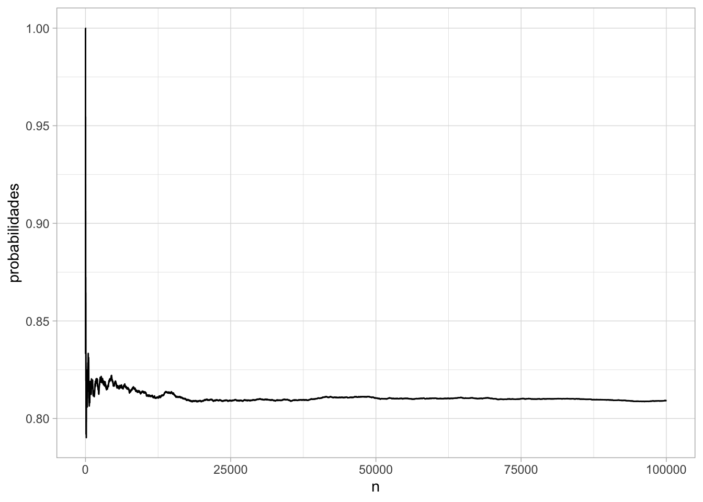
PREGUNTA 6
Una urna tiene 7 bolas numeradas del 1 al 7. Se sacan 2 bolas de la urna CON reemplazo. Sea X la suma del nu ́meros en las bolas.
1. \(a\) Para n = 100,1000,10000,100000 haga n simulaciones para obtener la funcio ́n de masa de probabilidad aproximada de X.
2. \(b\) Usando las funciones de las librer ́ıa 'patchwork' y 'ggplot2' ponga en un mismo gra ́fico las cuatro gra ́ficas de las funciones de masa del inicio anterior.
3. \(c\) Para n = 10, . . . , 100000 haga n simulaciones para obtener un estimado de la proba- bilidad P(X ≤ 10). Ponga en un gr ́afico n en el eje horizontal y la probabilidad en el eje vertical.
# Define the values of n to usen_values <-c(100, 1000, 10000, 100000)# Create an empty list to store the graphsgraph_list <-list()# Use a for loop to create the graphs and store them in the listfor (i in1:length(n_values)) { n <- n_values[i] df <-data.frame(suma = vector_simuls[1:n]) graph <- df %>%ggplot() +geom_histogram(aes(x = suma,y=..count../sum(after_stat(count))),linewidth=1, fill ="blue") +ggtitle(paste("Densidad de la suma n=", n)) +ylab("f") +xlab("suma") +theme_light() graph_list[[i]] <- graph}(graph_list[[1]] | graph_list[[2]]) / (graph_list[[3]] | graph_list[[4]])
probabilidades_estimadas <-c()for(i in1:length(simuls_satisfacen)){ satisfacen <- simuls_satisfacen[1:i] proba_estimada <-sum(satisfacen)/length(satisfacen) probabilidades_estimadas <-c(probabilidades_estimadas, proba_estimada)}print(paste("la proba estimada para 100 simulaciones es", probabilidades_estimadas[[100]]))
[1] "la proba estimada para 100 simulaciones es 0.76"
print(paste("la proba estimada para 1000 simulaciones es", probabilidades_estimadas[[1000]]))
[1] "la proba estimada para 1000 simulaciones es 0.789"
print(paste("la proba estimada para 10000 simulaciones es", probabilidades_estimadas[[10000]]))
[1] "la proba estimada para 10000 simulaciones es 0.7976"
print(paste("la proba estimada para 100000 simulaciones es", probabilidades_estimadas[[100000]]))
[1] "la proba estimada para 100000 simulaciones es 0.7953"
df_probas <-data.frame(n =1:length(simuls_satisfacen),probabilidades = probabilidades_estimadas)df_probas %>%ggplot() +geom_line(aes(x = n, y = probabilidades)) +ylab("probabilidades") +xlab("n") +theme_light()
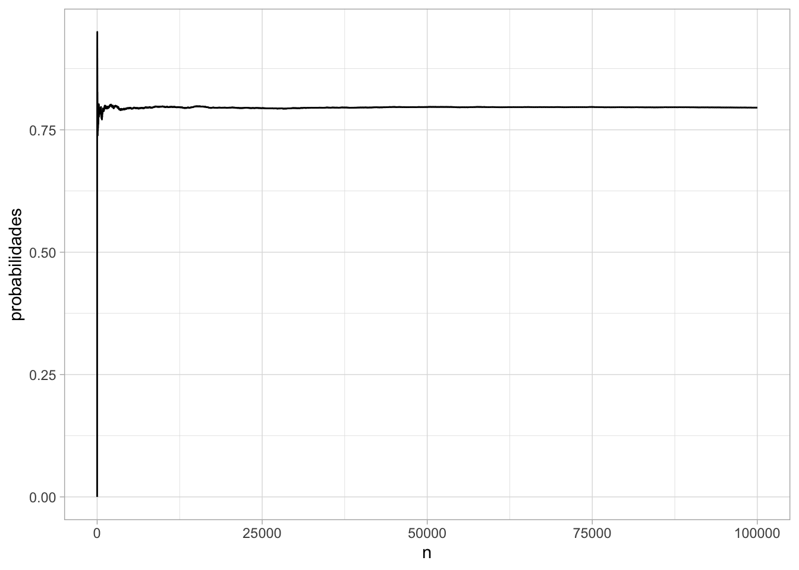
PREGUNTA 7
En un salo ́n de clases del curso de Ca ́lculo de Probabilidad 2 hay 50 estudiantes. Cada estudiante pone en papel su clave u ́nica (CU) y lo introduce en una urna comu ́n. Poste- riormente dichxs estudiantes toman un papel de la urna. Sea X el nu ́mero de alumnos que sacaron el papelito con su clave u ́nica.
(a) Para n = 100,1000,10000,100000 haga n simulaciones para obtener la funcio ́n de masa de probabilidad aproximada de X.
(b) Usando las funciones de las librer ́ıa ‘patchwork’ y ‘ggplot2’ ponga en un mismo gra ́fico las cuatro gra ́ficas de las funciones de masa del inicio anterior.
(c) Para n = 10, . . . , 100000 haga n simulaciones para obtener un estimado de la proba- bilidad P(X ≤ 15). Ponga en un gr ́afico n en el eje horizontal y la probabilidad en el eje vertical.
Definimos las claves únicas y el número de simulaciones
Imprimimos la probabilidad estimada para 100, 1000, 10000, 100000 simulaciones y lo graficamos
probabilidades_estimadas <-c()for(i in1:length(simuls_satisfacen)){ satisfacen <- simuls_satisfacen[1:i] proba_estimada <-sum(satisfacen)/length(satisfacen) probabilidades_estimadas <-c(probabilidades_estimadas, proba_estimada)}print(paste("la proba estimada para 100 simulaciones es", probabilidades_estimadas[[100]]))
[1] "la proba estimada para 100 simulaciones es 1"
print(paste("la proba estimada para 1000 simulaciones es", probabilidades_estimadas[[1000]]))
[1] "la proba estimada para 1000 simulaciones es 1"
print(paste("la proba estimada para 10000 simulaciones es", probabilidades_estimadas[[10000]]))
[1] "la proba estimada para 10000 simulaciones es 1"
print(paste("la proba estimada para 100000 simulaciones es", probabilidades_estimadas[[100000]]))
[1] "la proba estimada para 100000 simulaciones es 1"
df_probas <-data.frame(n =1:length(simuls_satisfacen),probabilidades = probabilidades_estimadas)df_probas %>%ggplot() +geom_line(aes(x = n, y = probabilidades)) +ylab("probabilidades") +xlab("n") +theme_light()
PREGUNTA 8:
Simule tantos n ́umeros uniformes en el intervalo (0,1) hasta que su suma sea mayor o igual
que 1. Sea N el n ́umero de sumando requeridos para alcanzar dicho objetivo. Por ejemplo
si obtuvo los números 0.35, 0.58, 0.22 se tiene que N = 3 (pues se necesitó 3 sumandos
para que la suma sea mayor ́o igual que 1).
(a) Para n = 100, 1000, 10000, 100000 haga n simulaciones para obtener la función de
masa de probabilidad aproximada de N .
(b) Usando las funciones de las librería ‘patchwork’ y ‘ggplot2’ ponga en un mismo gráfico
las cuatro gráficas de las funciones de masa del inicio anterior 2
#Comienzo haciendo una sola simulaciónset.seed(123)suma_unif <-0N <-0#para encontarr un valor de Nwhile (suma_unif <1) {#tomo las muestras Xu <-runif(1, min=0, max=1)#En N voy contando la cantidad de veces que corre el while N<-N+1 suma_unif<- suma_unif + Xu}#sigo con las simulaciones para distintos valores de N#para n=100n <-100N_sim<-numeric(n)for(i in1:n){ suma_unif <-0 N <-0while (suma_unif <1) { Xu <-runif(1, min=0, max=1) N<-N+1 suma_unif<- suma_unif + Xu } N_sim[i]<- N}#para hacer el data frame saco la probabilidad en cada puntodf_simunif100 <-data.frame(table(N_sim)/n )colnames(df_simunif100)<-c('N', 'Probabilidad')#head(df_simunif100)func_masa100 <-ggplot(data=df_simunif100)+geom_bar(aes(x= N, y= Probabilidad ),stat ='identity', fill='blue') +labs(title="Para n=100")+theme_minimal()func_masa100
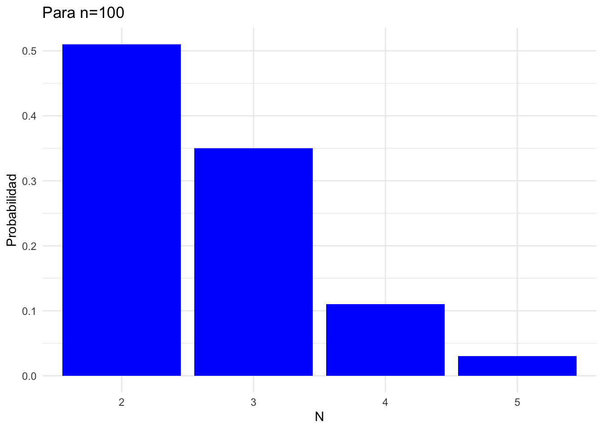
Ahora para n=1000
#sigo con las simulaciones para distintos valores de N#para n=1000n <-1000N_sim<-numeric(n)for(i in1:n){ suma_unif <-0 N <-0while (suma_unif <1) { Xu <-runif(1, min=0, max=1) N<-N+1 suma_unif<- suma_unif + Xu } N_sim[i]<- N}#para hacer el data frame saco la probabilidad en cada puntodf_simunif1000 <-data.frame(table(N_sim)/n )colnames(df_simunif1000)<-c('N', 'Probabilidad')#head(df_simunif)func_masa1000 <- df_simunif1000 %>%ggplot()+geom_bar(aes(x= N, y= Probabilidad ),stat ='identity', fill='blue') +labs(title="Para n=1000")+theme_minimal()func_masa1000
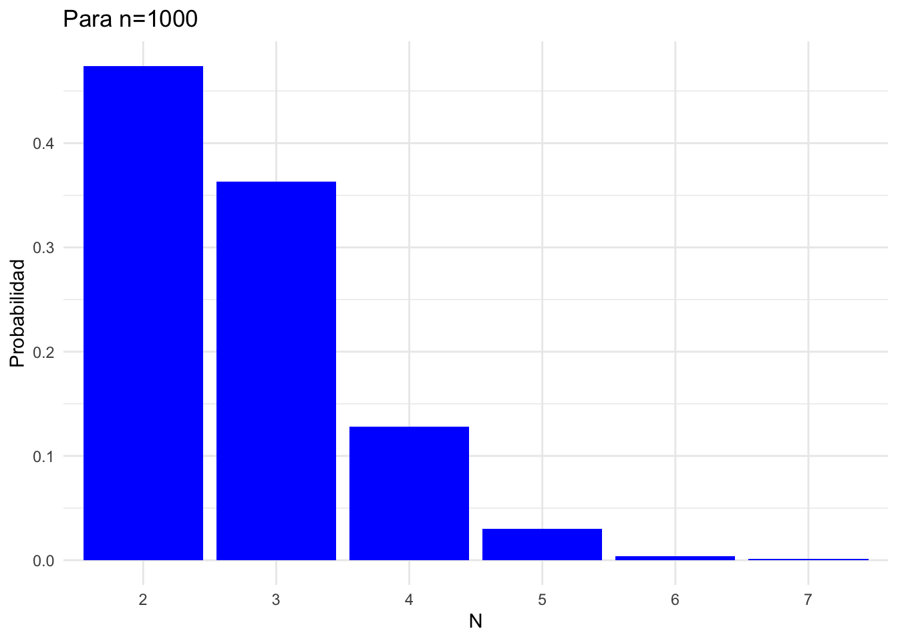
Para n=10000
#sigo con las simulaciones para distintos valores de N#para n=10000n <-10000N_sim<-numeric(n)for(i in1:n){ suma_unif <-0 N <-0while (suma_unif <1) { Xu <-runif(1, min=0, max=1) N<-N+1 suma_unif<- suma_unif + Xu } N_sim[i]<- N}#para hacer el data frame saco la probabilidad en cada puntodf_simunif10000 <-data.frame(table(N_sim)/n )colnames(df_simunif10000)<-c('N', 'Probabilidad')#head(df_simunif)func_masa10000 <-ggplot(data=df_simunif10000)+geom_bar(aes(x= N, y= Probabilidad ),stat ='identity', fill='blue') +labs(title="Para n=10000")+theme_minimal()func_masa10000
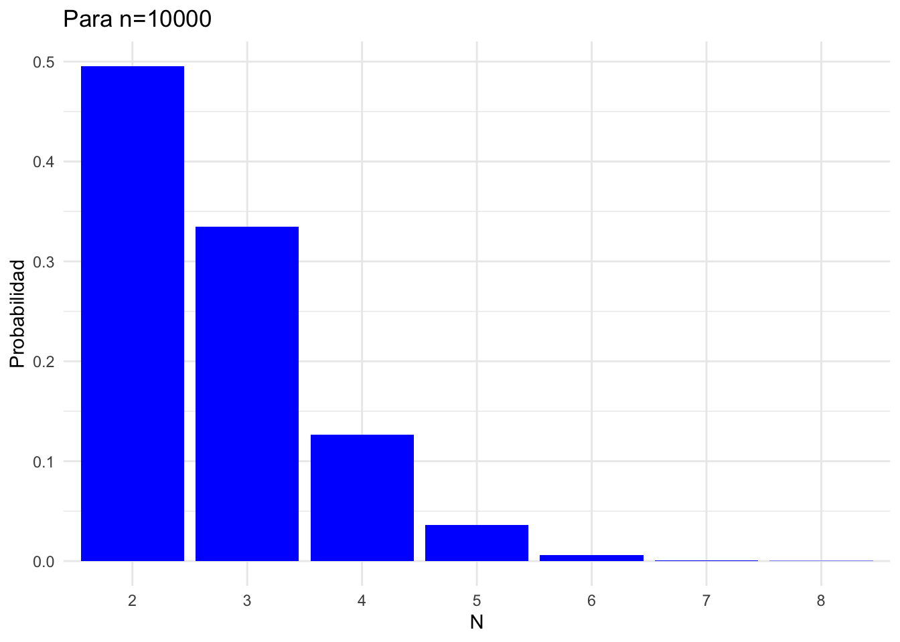
Para n=100000
#para n=100000n <-100000N_sim<-numeric(n)for(i in1:n){ suma_unif <-0 N <-0while (suma_unif <1) { Xu <-runif(1, min=0, max=1) N<-N+1 suma_unif<- suma_unif + Xu } N_sim[i]<- N}#para hacer el data frame saco la probabilidad en cada puntodf_simunif100000 <-data.frame(table(N_sim)/n )colnames(df_simunif100000)<-c('N', 'Probabilidad')#head(df_simunif)func_masa100000 <-ggplot(data=df_simunif100000)+geom_bar(aes(x= N, y= Probabilidad ),stat ='identity', fill='blue') +labs(title="Para n=100000")+theme_minimal()func_masa100000
Ahora junto todas las gráficas del inciso a en la misma gráfica
(c) Para n = 10, . . . , 100000 haga n simulaciones para obtener un estimado del valor
esperado de E(N ). Ponga en un gráfico n en el eje horizontal y el valor esperado en
el eje vertical.
#hago simulaciones para n=10, es de lo único que todavía no tengo probabilidades calculadasn <-10N_sim<-numeric(n)for(i in1:n){ suma_unif <-0 N <-0while (suma_unif <1) { Xu <-runif(1, min=0, max=1) N<-N+1 suma_unif<- suma_unif + Xu } N_sim[i]<- N}#para hacer el data frame saco la probabilidad en cada puntodf_simunif10 <-data.frame(table(N_sim)/n )colnames(df_simunif10)<-c('N', 'Probabilidad')#calculo el valor esperado con su formula para n=10#Primero debo asegurarme que el tipo de datos del data frame sea el correcto para poder operar con ellosdf_simunif10$N <-as.numeric(as.character(df_simunif10$N))df_simunif10$Probabilidad <-as.numeric(df_simunif10$Probabilidad)ve10<-sum(df_simunif10$N * df_simunif10$Probabilidad)#Valor esperado n=100df_simunif100$N <-as.numeric(as.character(df_simunif100$N))df_simunif100$Probabilidad <-as.numeric(df_simunif100$Probabilidad)ve100<-sum(df_simunif100$N * df_simunif100$Probabilidad)#Valor esperado n=1000df_simunif1000$N <-as.numeric(as.character(df_simunif1000$N))df_simunif1000$Probabilidad <-as.numeric(df_simunif1000$Probabilidad)ve1000<-sum(df_simunif1000$N * df_simunif1000$Probabilidad)#valor esperado n=10000df_simunif10000$N <-as.numeric(as.character(df_simunif10000$N))df_simunif10000$Probabilidad <-as.numeric(df_simunif10000$Probabilidad)ve10000<-sum(df_simunif10000$N * df_simunif10000$Probabilidad)#valor esperado n=100000df_simunif100000$N <-as.numeric(as.character(df_simunif100000$N))df_simunif100000$Probabilidad <-as.numeric(df_simunif100000$Probabilidad)ve100000<-sum(df_simunif100000$N * df_simunif100000$Probabilidad)#pongo todos los valores del valor esperado en un vector y también los de n en otron <-c(10, 100, 1000, 10000, 100000)EN<-c(ve10, ve100, ve1000, ve100000, ve100000)#voy a crear un dataframe para guardad mis resultadosdf_valor_esperado <-data.frame(n, EN)df_valor_esperado
n EN
1 1e+01 2.90000
2 1e+02 2.66000
3 1e+03 2.73000
4 1e+04 2.71806
5 1e+05 2.71806
grafvaloresperado<-df_valor_esperado %>%ggplot(aes(x= n, y=EN, group=1)) +geom_line()+geom_point()+theme_minimal()+labs(title ="E(N) para los distintos valores de n")grafvaloresperado
Pregunta 9
Considere \[X_{1}, X_{2}, X_{3}, …,X_{n} \] variables aleatorias independientes e identicamente distribuídas, tal que \[X_{i} \] se distribuye Unif(0,1). Sea \[X_{(2)} \] el segundo valor más pequeño de de estas n \[X_{i} s \]
(a) Para n = 100, 1000, 10000, 100000 haga 10, 000 simulaciones para obtener la función de densidad de probabilidad aproximada de \[X_{(2)} \]
`stat_bin()` using `bins = 30`. Pick better value with `binwidth`.
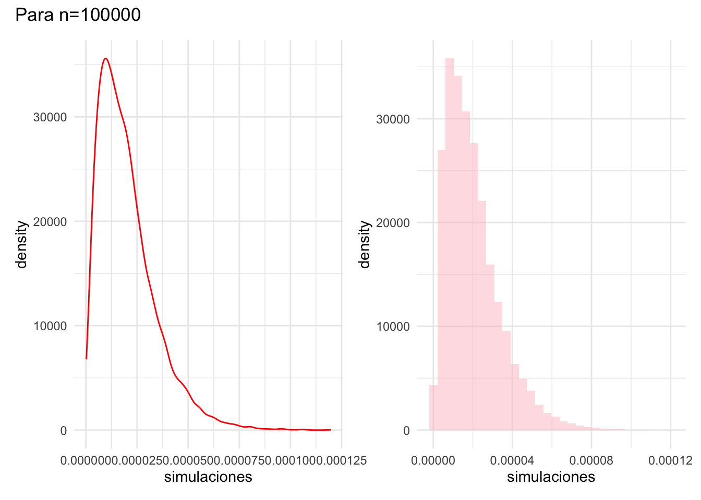
(b) Usando las funciones de la librería ‘patchwork’ ponga en un mismo gráfico las cuatro gráficas de las funciones de masa del inciso (a)
graficafinal<-(graficas100)/(graficas1000)/(graficas10000)/(graficas100000) +plot_annotation(title ='Función de densidad aproximada de X(2)')graficafinal
`stat_bin()` using `bins = 30`. Pick better value with `binwidth`.
`stat_bin()` using `bins = 30`. Pick better value with `binwidth`.
`stat_bin()` using `bins = 30`. Pick better value with `binwidth`.
`stat_bin()` using `bins = 30`. Pick better value with `binwidth`.
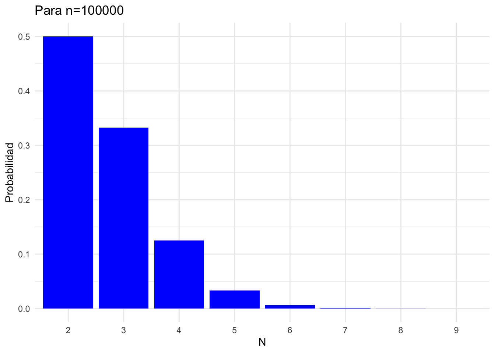
c) ¿Qué densidad diría que tiene X(2)?
Diríamos que tiene densidad Beta (2,n-1)
Para comprobarlo Pondremos una función Beta sobre las gráficas calculadas anteriormete
Para n=10000
#graficon<-10000densidadjun<- densidadx210000+stat_function(fun=dbeta, args=list(shape1=2,shape2=n-1))graficajun<-graficax210000+stat_function(fun=dbeta, args=list(shape1=2,shape2=n-1))graficasjun<-densidadjun| graficajungraficasjun<-graficasjun+plot_annotation("Comparando con la distribución Beta")graficasjun
`stat_bin()` using `bins = 30`. Pick better value with `binwidth`.
Como podemos observar si se distribuye Beta(2,n-1)
(d) ¿Es consistente este resultado con ejemplo te ́orico que se vió en clase?
Si es consistente con ej ejemplo teórico que vimos en clase en el que sustituimos los valores necesarios
PREGUNTA 10
Considere X1, . . . , Xn variables aleatorias independientes e id ́enticamente distribuidas, Xi ∼ Unif(−1,1). Sea Xmed la mediana de estas n Xi’s, i.e.
Xmed= -X((n+1)/2). si n es impar
(1/2)[X(n/2)+X(n/2)+1) si n es par
(a)Para n = 100, 1000, 10000, 100000 haga 10, 000 simulaciones para obtener la funci ́on de densidad de probabilidad aproximada de Xmed.
(b)Usando las funciones de la librer ́ıa ‘patchwork’ ponga en un mismo gra ́fico las cuatro gra ́ficas de las funciones de masa del inicio (a).
Considere \(X_1, \ldots, X_{999}\) variables aleatorias independientes e idénticamente distribuidas Unif \([-1,1]\). También considere \(X_{1000} \sim\) Unif \([200,300]\) independiente de las otras 999 variables aleatorias, i.e. en total se tienen 1000 variables aleatorias independientes.
Para \(n=100,1000,10000,100000\) haga \(n\) simulaciones para obtener la función de densidad de probabilidad aproximada de \(\bar{X}\).
Usando las funciones de la librería ‘patchwork’ ponga en un mismo gráfico las cuatro gráficas de las funciones de masa del inicio (a).
¿Qué densidad diría que tiene \(\bar{X}\) ?
¿Diría que se violenta el Teorema del Límite Central?
Considere X1, . . . , Xn variables aleatorias independientes e id ́enticamente distribuidas, t(1).
(a) Calcule teoricamente E(X)
La esperanza de una variable aleatoria t-Student con un grado de libertad por definición es la media de la distribución. Tenemos que n = 1, entonces sabemos que X1 se distribuye t-Student con un grado de libertad.
La función de densidad de probabilidad de una distribución t-Student con un grado de libertad es:
Resolviendo la integral E(X1) = ∫-∞^∞ x / [√(π)(1 + x²)^3/2] dx
Para resolver esta integral, podemos hacer un cambio de variable x = tan(u). Entonces, dx = sec²(u) du y la integral nos queda:
E(X1) = ∫-π/2^π/2 tan(u) / [√(π)(1 + tan²(u))^3/2] sec²(u) du
E(X1) = (2/√π) ∫-π/2^π/2 sin(u) du = 0
Por lo tanto la esperanza de X1 es 0.
(b) Para n = 100, 1000, 10000, 100000 haga 10, 000 simulaciones para obtener la funci ́on de densidad de probabilidad aproximada de X ̄, i.e. el promedio aritm ́etico de las observaciones.
for (n in n_vals) { x_bar_vals <-numeric(n_sims)for (i in1:n_sims) { x_vals <-rt(n, df=1) x_bar_vals[i] <-mean(x_vals) }plot(density(x_bar_vals), main=paste("Densidad de probabilidad de X̄ para n =", n))}
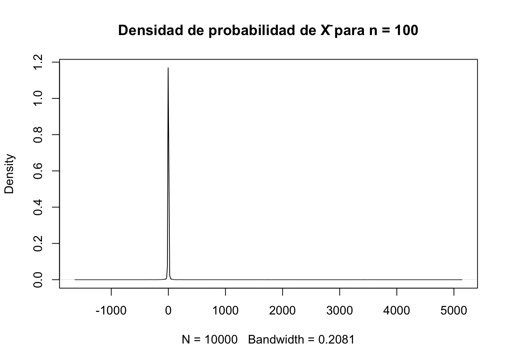
(c) Usando las funciones de la librer ́ıa ‘patchwork’ ponga en un mismo gra ́fico las cuatro gra ́ficas de las funciones de masa del inicio (a).
library(patchwork)p1 <-plot(density(x_bar_vals), main="Densidad de probabilidad de X̄ para n = 100")
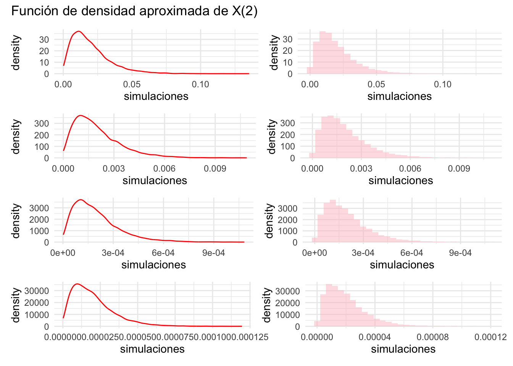
p2 <-plot(density(x_bar_vals), main="Densidad de probabilidad de X̄ para n = 1000")
p3 <-plot(density(x_bar_vals), main="Densidad de probabilidad de X̄ para n = 10000")
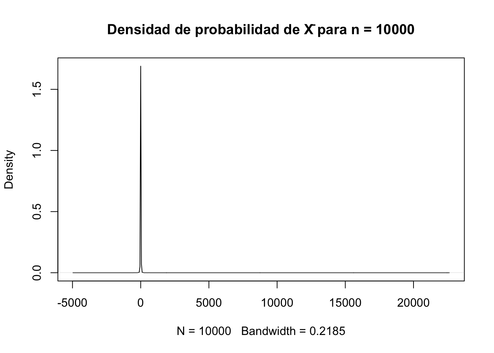
p4 <-plot(density(x_bar_vals), main="Densidad de probabilidad de X̄ para n = 100000")
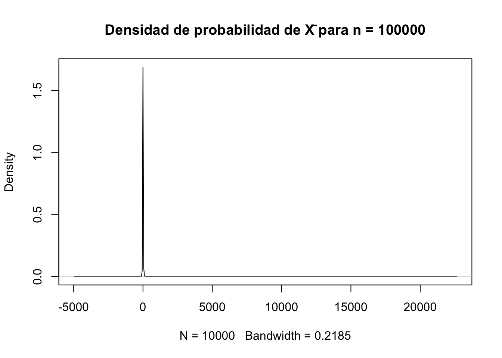
p1 + p2 + p3 + p4
integer(0)
(d) ¿Qué densidad diría que tiene X̄?
Ya que X sigue una distribución t(1), podemos utilizar el Teorema del Límite Central y sabemos que X̄ se aproxima a una distribución normal con media μ y varianza σ^2/n. En este ejemplo E(X) no existe (es cero). Pero podemos saber que la varianza de X converge a cero cada vez que n aumenta. Esta distribución converge a 0, lo que quiere decir que tiene una distribución con densidad infinita en cero, y en cualquier otro valor.
(e) ¿Dir ́ıa que se violenta el Teorema del L ́ımite Central?
En el inciso d) usamos el TLC para afirmar que X se aproxima a una distribución normal cuando n aumenta. Con lo cual concluimos que el TLC no se viola.
PREGUNTA 14
14. Responda las siguientes preguntas:
(a) Considere el lanzamiento de 2 dados y sea X la suma sus valores. Lleve a cabo 100,000
simulaciones y obtenga una aproximacio ́n de la funcio ́n de masa de X
Usamos un loop para crear las gráficas y guardarlas en la lista
for (i in1:length(n_values)) { n <- n_values[i] df <-data.frame(suma = vector_simuls[1:n]) graph <- df %>%ggplot() +geom_histogram(aes(x = suma,y=after_stat(count)/sum(after_stat(count))),linewidth=1, fill ="blue") +ggtitle(paste("Densidad de la suma n=", n)) +ylab("f") +xlab("suma") +theme_light() graph_list[[i]] <- graph}(graph_list[[1]])
str(vector_simuls)
num [1:100000] 9 5 8 8 10 7 5 8 4 5 ...
(b) Considere dos hexaedros, uno con todas las caras marcadas con “5”; el otro tiene 3 marcas de “2” y el resto de “6”. Simule el lanzamiento de estos dos dados y sea Y la suma de sus valores. Lleve a cabo 100,000 simulaciones y obtenga una aproximacio ́n de la funcio ́n de masa de Y
Usamos un loop para crear las gráficas y guardarlas
for (i in1:length(n_values)) { n <- n_values[i] df <-data.frame(suma = vector_simuls[1:n]) graph <- df %>%ggplot() +geom_histogram(aes(x = suma,y=after_stat(count)/sum(after_stat(count))),linewidth=1, fill ="blue") +ggtitle(paste("Densidad de la suma n=", n)) +ylab("f") +xlab("suma") +theme_light() graph_list[[i]] <- graph}(graph_list[[1]])
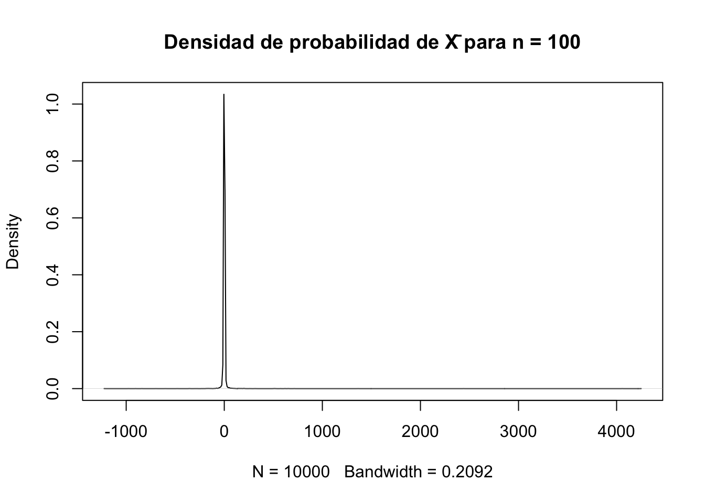
str(vector_simuls)
num [1:100000] 11 7 11 11 11 7 7 7 7 7 ...
(c) Considere el lanzamiento de dos hexaedros, uno marcado con las etiquetas “1”, “2”, “2”, “3”, “3”, “4” en cada cara; el otro tiene las etiquetas “1”, “3”, “4”, “5”, “6” y “8”. Sea Z la suma de sus valores. Lleve a cabo 100,000 simulaciones y obtenga una aproximacio ́n de la funcio ́n de masa de Z.